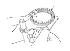
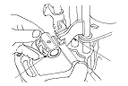

M/T Shift Fork Clearance Inspection
NOTE: The synchro sleeve and synchro hub should be replaced as a set.
Measure the clearance between each shift fork (A) and its matching synchro sleeve (B). If the clearance exceeds the service limit, go to
Step 2
.
Standard:
0.35−0.65 mm (0.014−0.026 in.)
Service Limit:
1.0 mm (0.04 in.)

Measure the thickness of the shift fork fingers.
If the thickness is not within the standard, replace the shift fork.
If the thickness is within the standard, replace the synchro sleeve.
If one arm of the shift fork shows more wear than others, the fork may be bent and needs to be replaced.
Standard:
3rd/4th shift fork:
7.4−7.6 mm (0.29−0.30 in.)
1st/2nd, 5th shift forks:
6.2−6.4 mm (0.24−0.25 in.)
Measure the clearance between the shift fork (A) and the shift arm A (B). If the clearance exceeds the service limit, go to
Step 4
.
Standard:
0.2−0.5 mm (0.01−0.02 in.)
Service Limit:
0.62 mm (0.024 in.)

Measure the width of the shift arm A.
If the width is not within the standard, replace the shift arm A.
If the width is within the standard, replace the shift fork or shift piece.
Standard:
12.9−13.0 mm (0.508−0.512 in.)